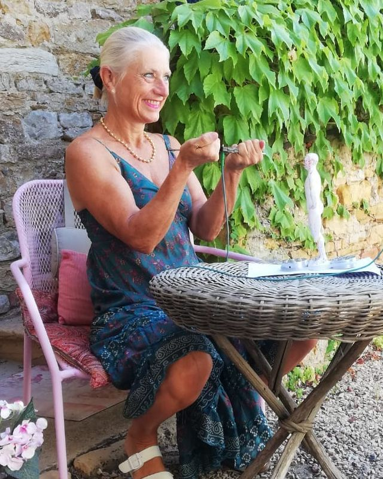

Corps · Détente
Réflexologie plantaire
Le pied est vu comme une carte du corps. Par un toucher précis des zones réflexes, la réflexologie invite à une détente profonde et aide à relâcher les tensions physiques et nerveuses.
Philosophie
Les médecines douces proposent une autre manière de prendre soin de soi : regarder la personne dans son ensemble, son corps, ses émotions et son énergie, plutôt qu'un symptôme isolé.

Tout est une question d'équilibre énergétique. Quand l'énergie circule librement, le corps et l'esprit retrouvent leur capacité naturelle à s'apaiser. Quand elle se bloque, la fatigue, le stress ou les tensions s'installent.
Soi avec soi : se réapproprier son corps, écouter ses besoins, apaiser le mental.
Soi avec les autres : alléger le poids des émotions et des relations difficiles.
Soi avec l'univers : retrouver le lien avec la nature, les saisons, le vivant.
Cette démarche s'inscrit dans une façon de vivre plus naturelle : les plantes, une alimentation saine, un rythme choisi. Texte proposé, à relire et compléter par Béatrice.
Les pratiques
Chaque technique a son histoire et sa façon d'agir. Béatrice les associe selon ce dont vous avez besoin au moment de la séance.
Corps · Détente
Le pied est vu comme une carte du corps. Par un toucher précis des zones réflexes, la réflexologie invite à une détente profonde et aide à relâcher les tensions physiques et nerveuses.
Corps · Énergie
Issu de la tradition japonaise, le shiatsu (« pression des doigts ») suit le trajet des méridiens. La séance se reçoit habillé, allongé sur un futon, et favorise la circulation de l'énergie.
Énergie · Bilan
Une méthode de bilan et de rééquilibrage énergétique qui observe comment l'énergie vitale circule et cherche à soutenir l'autorégulation du corps. Elle convient à tous les âges.
Énergie · Personnes et lieux
Une personne comme un lieu peut accumuler des énergies lourdes. Le nettoyage vise à les libérer pour retrouver une sensation de légèreté, au cabinet, sur place ou à distance.
Mental · Émotions
Respiration, détente musculaire et visualisation positive : des outils simples, à refaire chez soi, pour mieux vivre le stress, préparer un événement ou améliorer le sommeil.
Émotions · Nature
Préparés à partir de fleurs, les élixirs accompagnent les états émotionnels passagers : peur, impatience, découragement. Béatrice vous aide à choisir le mélange qui vous correspond.
Le cadre
Une première séance permet de faire connaissance et de choisir ensemble la pratique qui vous convient.
Prendre rendez-vous